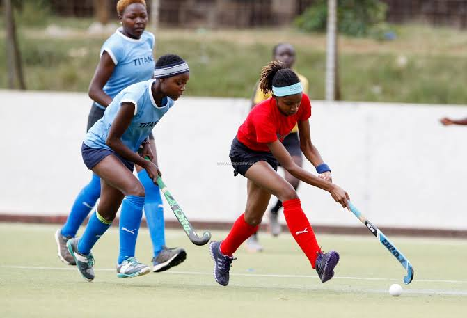

HERE, YOU ARE GOING TO MEET THE COACHES
Talking with coaches about sports can be beneficial for several reasons:
Expert Advice: Coaches have specialized knowledge and expertise in their sport. They can provide insights, strategies, and techniques to improve your performance.
Skill Development: Coaches can offer personalized feedback and guidance tailored to your strengths and weaknesses, helping you to develop and refine your skills.
Motivation: Coaches can inspire and motivate athletes to push themselves harder, set and achieve goals, and stay focused on their training.
Game Understanding: Coaches can help you understand the nuances of the game, including tactics, rules, and game situations, which can enhance your overall comprehension and decision-making on the field or court.
Mental Toughness: Coaches can assist in building mental toughness, resilience, and confidence, which are crucial for success in sports and life.
Injury Prevention: Coaches can provide guidance on proper technique, conditioning, and recovery strategies to minimize the risk of injury and promote long-term athletic health.
KNOW THE SPORTS
Knowing about various sports can be beneficial for several reasons:
Broadened Perspective: Understanding different sports exposes you to diverse cultures, traditions, and ways of thinking, broadening your perspective on athletic endeavors and human capabilities.
Cross-Training Opportunities: Knowledge of multiple sports allows you to cross-train, incorporating elements from different disciplines to improve overall fitness, agility, and athleticism.
Transferable Skills: Many skills and concepts learned in one sport can be applied to others. For example, teamwork, coordination, strategy, and discipline are valuable across various athletic pursuits.
Social Connection: Being knowledgeable about different sports enables you to engage in conversations with a wider range of people, fostering social connections and networking opportunities.
Adaptability: Understanding different sports can make you more adaptable to different environments and challenges, as you learn to adjust your strategies and tactics based on the specific demands of each sport.
Appreciation for Diversity: Appreciating the nuances and intricacies of various sports promotes a deeper understanding and appreciation for diversity in athletic expression and competition.
KNOW HOW TO BALANCE LIFE
Balancing the academic side with sports activities is beneficial to sports for several reasons:
- Intellectual Development: Academic pursuits enhance critical thinking, problem-solving, and creativity, which can translate to improved decision-making and strategic skills on the sports field or court.
- Motivation: Academic achievements can serve as motivation for athletes to excel in their sports, as success in one area can positively influence performance and drive in another.
- Stress Management: Balancing academics and sports provides athletes with a well-rounded lifestyle, reducing the risk of burnout and allowing for better stress management. This balance promotes mental well-being, which is crucial for peak athletic performance.
- Time Management: Juggling academic responsibilities with sports teaches athletes valuable time management skills. Learning to allocate time effectively between study sessions and training sessions helps athletes optimize their performance in both areas.
- Diversified Skill Set: Academic pursuits offer a different set of challenges and skills compared to sports. Balancing both allows athletes to develop a diverse skill set, which can contribute to their overall athleticism and adaptability in various situations.
- Long-Term Success: Balancing academics with sports sets athletes up for long-term success by providing them with a well-rounded education and skill set. This can open up opportunities for scholarships, career options beyond sports, and a fulfilling life after athletics.
HAVE KNOWLEDGE ON EXERCICES
Having knowledge of warm-ups and cool-downs is important for several reasons:
- Injury Prevention: Proper warm-up exercises help prepare the body for physical activity by increasing blood flow to muscles, improving flexibility, and enhancing joint mobility. This reduces the risk of injury during strenuous exercise by allowing muscles and connective tissues to gradually adapt to the demands placed on them.
- Performance Enhancement: Warm-up routines can improve performance by increasing muscle temperature, nerve conduction velocity, and metabolic rate. This results in improved muscle contraction and relaxation, leading to better speed, power, and agility during physical activity.
- Mental Preparation: Warm-ups also serve as a mental preparation tool, allowing athletes to focus their attention, visualize their performance, and get into the right mindset for training or competition. This mental preparation can enhance confidence and reduce anxiety, leading to better overall performance.
- Improved Recovery: Cool-down exercises help facilitate the transition from intense physical activity to a state of rest and recovery. They promote the removal of waste products such as lactic acid from muscles, reduce muscle soreness, and prevent the onset of delayed onset muscle soreness (DOMS).
- Injury Rehabilitation: Cool-down routines can aid in injury rehabilitation by promoting blood flow to injured tissues, reducing inflammation, and facilitating the repair and recovery process. They also help maintain joint mobility and flexibility, which is important during the rehabilitation phase.
- Long-Term Health: Incorporating warm-up and cool-down routines into regular exercise habits promotes long-term health and well-being. By reducing the risk of injury, enhancing performance, and supporting recovery, individuals are more likely to sustain an active lifestyle over time, leading to better overall health outcomes.